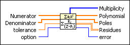
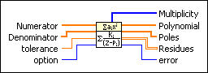

Partial Fraction Expansion VI
Owning Palette: Polynomial VIs
Requires: Full Development System
Calculates the partial fraction expansion of a polynomial using the Heaviside cover-up method.

 Add to the block diagram Add to the block diagram |
 Find on the palette Find on the palette |
Owning Palette: Polynomial VIs
Requires: Full Development System
Calculates the partial fraction expansion of a polynomial using the Heaviside cover-up method.

| Add to the block diagram |
Find on the palette |
 |
Numerator contains the rational polynomial coefficients, in ascending order of power, for the numerator polynomial. | ||||
|
Denominator contains the rational polynomial coefficients, in ascending order of power, for the denominator polynomial. | ||||
 |
tolerance defines a level for multiplicity. | ||||
 |
option specifies how the VI handles the co-factors of Numerator and Denominator. If option is Cancel Co-factors, this VI performs polynomial GCD of Numerator and Denominator first. If option is Reserve Co-factors, this VI keeps Denominator unchanged.
|
||||
 |
Multiplicity returns the number of times each root in Poles occurs. Multiplicity occurs when the difference between two elements in Poles is less than tolerance. | ||||
 |
Polynomial returns the coefficients, in ascending order of power, for the quotient polynomial that results from the division of Numerator by Denominator. | ||||
|
Poles returns the unique roots of Denominator. The roots of Denominator result from removing all common factors between Numerator and Denominator. | ||||
 |
Residues returns the numerators of the partial fractions that result for each pole. | ||||
 |
error returns any error or warning from the VI. You can wire error to the Error Cluster From Error Code VI to convert the error code or warning into an error cluster. |